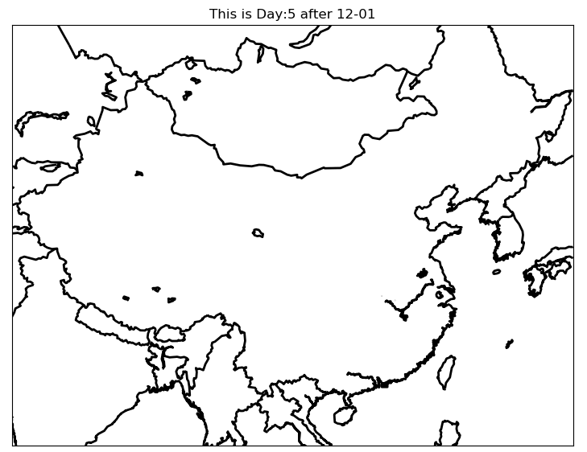
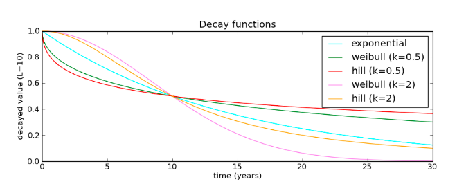
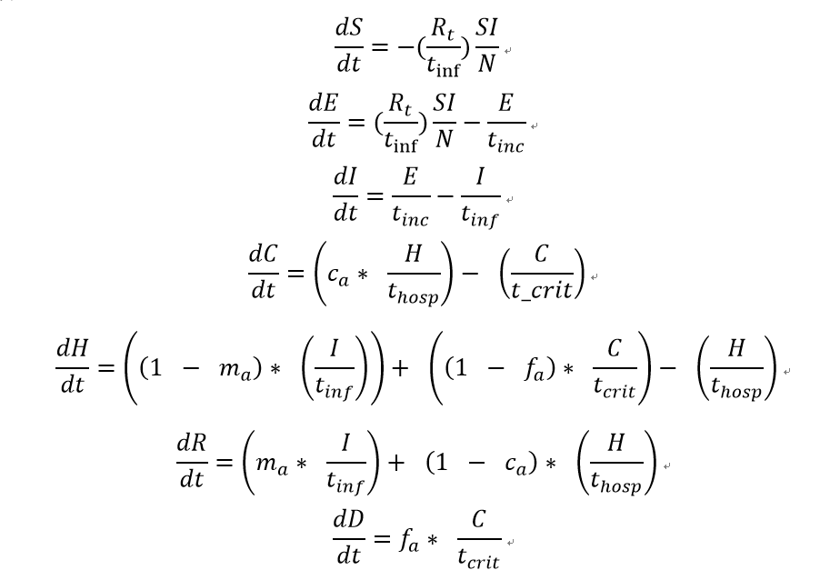
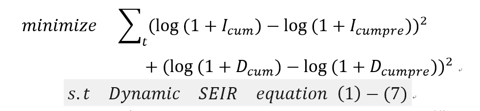
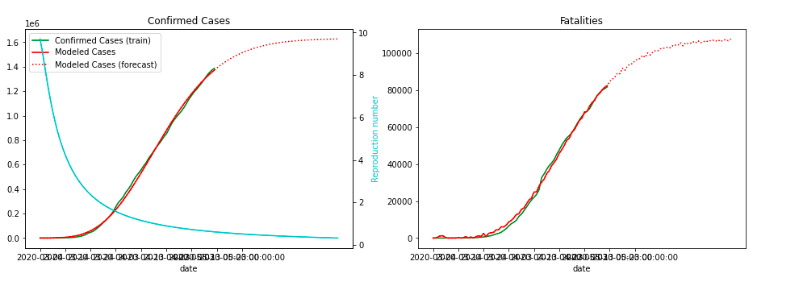
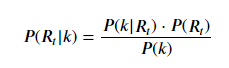
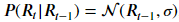
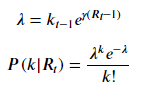
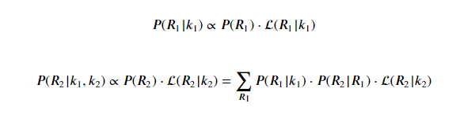

模型预测图
（点击返回顶部）
在对传染病的预测建模中，一般采用的是传染病模型中常用的SEIR模型（Susceptible-Exposed-Infectious-Removed model）。但是，SEIR模型在用于实际情况模拟预测时有着一定的缺陷。考虑到本次传染病的实际情况，我们分别采用了Metapopulation SEIR 模型对本次疫情进行了建模模拟，采用了动态的SEIR模型（Dynamic SEIR）来对本次疫情进行建模并预测。下面将分成三部分对分别对传统的SEIR模型、Metapopulation SEIR 模型、动态SEIR模型进行介绍。
1、传统的SEIR模型
传统的SEIR模型将在传染病传播过程中的人群分为以下几个类别：
- （1）S类，易感者(Susceptible)，指未得病者，但缺乏免疫能力，与感染者接触后容易受到感染；
- （2）E类，潜伏者(Exposed)，指接触过感染者，但暂无能力传染给其他人的人，对潜伏期长的传染病适用；
- （3）I类，感染者(Infective)，指染上传染病的人，可以传播给S类成员，将其变为E类或I类成员；
- （4）R类，康复者(Recovered)，指被隔离或因病愈而具有免疫力的人。如免疫期有限，R类成员可以重新变为S类。
其中，这几类人群之间的相互转换可以由如下的图片表示:
以微分方程组的形式表示则为
其中，N=S+I+E+R，代表区域内的总人口。
β为传染率，表示在传染病在健康态（S）的人与患病状态下（I）的人之间传播的概率。
σ为潜伏率，表示在单位时间潜伏态的人（E）变为患病（I）的比率，与潜伏期Y互成倒数。
γ为治愈率，表示在单位时间患病状态的人（I）变为康复者（R）的比例，与治愈时间D互为倒数。
传统的SEIR模型通过求解如上微分方程组，即可模拟传染病在一个区域内的传播。
2、动态SEIR预测模型介绍
在传统的SEIR模型中，传染率β为固定不变的常数，但是在疫情的具体情况中，随着政府管控的加强，民众防范意识提升，医疗技术的进一步发展，在实际情况下，传染率β应该随着时间逐步下降，所以，我们进一步假设SEIR模型中，β服从Hill decay function ，即β(t)=1/(1+(k/L)^k)，方程参数中的L表示传染率减半的时间，hill函数的图像由下图所示:
同时，考虑到在本次疫情中，存在轻症、重症等较为复杂的情况，为了更好的预测模型中的死亡人数，我们将原来SEIR模型中的R状态，拆分为了4个状态，分别是Recovered（治愈），Hospitalized（住院），Critical（重症），Death（死亡），这样，我们的新模型可以用如下微分方程组描述:
模型中各参数的含义如下：
- R_t=在t时刻的基本再生数，等于βt*平均感染期;
- T_inc = 平均潜伏期，一般为5.6天;
- T_inf = 平均感染期，一般 2.9 天;
- T_hosp = 在病人变为重症或者治愈的平均时间，一般为4天;
- T_crit = 病人平均在重症期的时间，一般为14天;
- m_a = 普通病人变为治愈的概率，假定为0.8;
- c_a =普通病人变为重症的概率，假定为0.1;
- f_a =重症病人死亡的概率，假定为0.3.
以上假设参照了www.kaggle.com/covid-19-contributions
为达到预测的目的，我们将模型与实际数据进行拟合，为求解最优的模型参数，我们求解如下误差目标函数的最小值:
其中目标函数中的I_cum 代表实际累积患病人数，I_cumpre代表使用模型预测的累积患病人数，D_cum 代表实际累积死亡人数，D_cumpre代表使用模型预测的累积死亡人数，通过拟合模型求解最优参数，我们再使用最优模型对后来传染病传播情况进行预测。
在本次预测中，我们使用了动态的SEIR模型进行传染病传播情况的预测。
模型的局限性：
- 1、模型对假设有较大的依赖，假设的不同可能会导致模型结果变化较大；
- 2、部分参数可能会随着时间变化，比如治愈时间可能会随着时间推移变短；
- 3、官方数据可能不完全，比如可能存在部分未就医患者，或者潜伏期未被统计到的人数；
- 4、新的相关政策对疫情的影响较大，比如统计标准的变动往往会导致患病人数有较大的波动。
模型的准确率：
国内预测:
我们将2月13日到2月19日的数据作为模型的输入，预测2月20到2月23日的实际患病人数，并与实际情况对比，结果如下：
湖北
非湖北
可以看出，在短期内，模型的预测效果比较好，但是随着时间的推移，由于实际情况可能会发生进一步的变化，可能导致模型的误差会不断增大，所以仅用模型进行7天的预测。由于治愈率会逐步上升，且处于潜伏期的人数难以估计，所以模型在对累计病例数的预测上可能偏差较大。
同时，考虑到应对措施的进步，可以判断在长期内实际患病人数应该要低于模型预测值。
由于疑似病例的报告并不精确到省级，对处于潜伏期的人数难以估计，且湖北省的治愈率与死亡率均比较特殊，所以对湖北省的预测偏差可能较大。
美国预测:
可以看出，对于之前的数据，模型的拟合效果比较好，但是随着时间的推移，由于实际情况可能会发生进一步的变化，而模型对假设的依赖较大，这些假设与实际上的差异可能导致模型的误差会不断增大。
同时，考虑到应对措施的进步，可以判断在长期内实际患病人数应该要低于模型预测值。
由于对于美国，各州的防疫政策不同，故对美国整体进行模型估计的误差可能较大。
实时R0监测模型
在任何流行病中，基本再生数R_0，代表每个感染者平均感染的人数，是对传染病传播能力评价的重要指标。但是，R_0只是传染病传染能力的一个简单的度量，它只考虑了在没有任何管控措施下传染病传播的情况，没有考虑到人们行为和管控的变化。
随着传染病的流行，越来越多的管控限制将改变R_0,我们把在t时刻的R_0值称为R_t。了解当前的R_t非常重要。当R_t<1时，传染病将在很大一部分人群中传播。如果R_t<1，传染病将在有机会感染许多人之前迅速减缓。R_t越低，传染病传播情况越容易管理。一般来说， R_t<1，意味着传染病在控制之中。
对R_t值的评估在两个方面有较大的意义:
- 1、它帮助我们了解当前的管控措施在控制疫情方面的有效性;
- 2、它告诉我们在当前情况下是否应该增加或减少管控措施.
实时R0监控算法
我们认为，t时刻新增的感染人数k与R_t相关，同时R_t也和之前的所有R_t-m相关，所以，我们采用贝叶斯方程来进行R_t的计算:
其中，根据相关的传染病相关论文研究，我们假设:

根据以上公式，我们可以计算出所有天数R_t的概率分布，前2天的计算公式示例如下:
在求得所有R_t的概率分布之后，我们使用极大似然估计估计出每天的R_t值
以美国全国的情况为例，R_t的变化情况如下:
模型的建立思路与实现方法主要来自于
https://github.com/NSSAC/PatchSim以及
https://github.com/YiranJing/Coronavirus-Epidemic-2019-nCov，在此特别感谢！
参考论文：Nowcasting and forecasting the potential domestic and international spread of the 2019-nCoV outbreak (Jan 31)